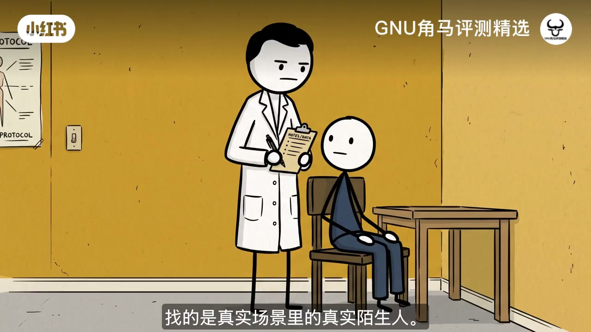
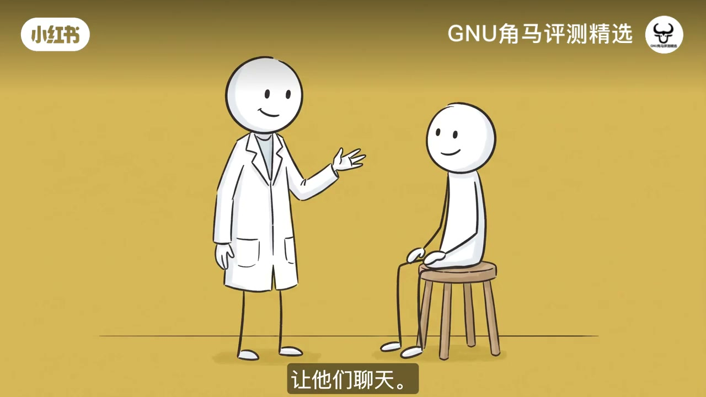
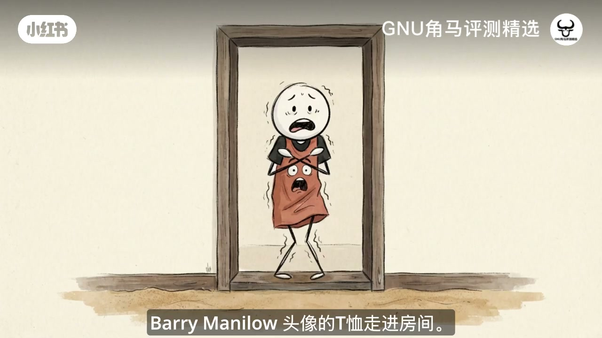
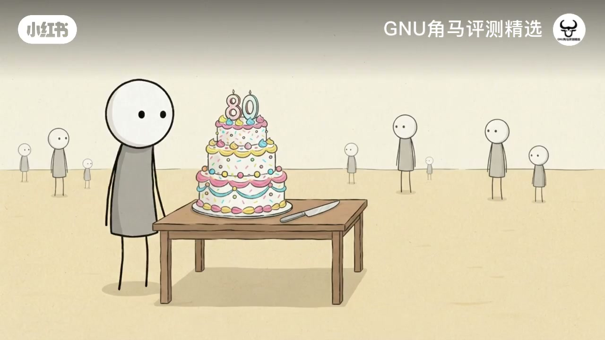
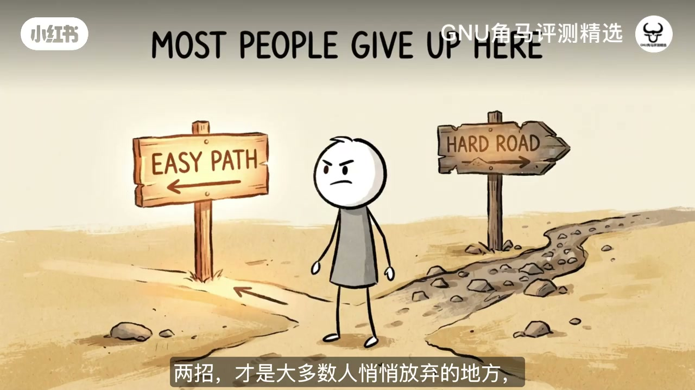
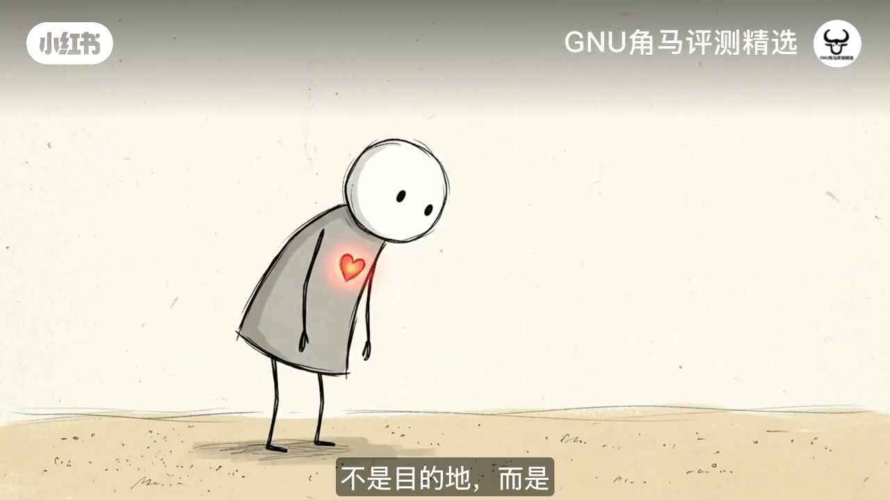
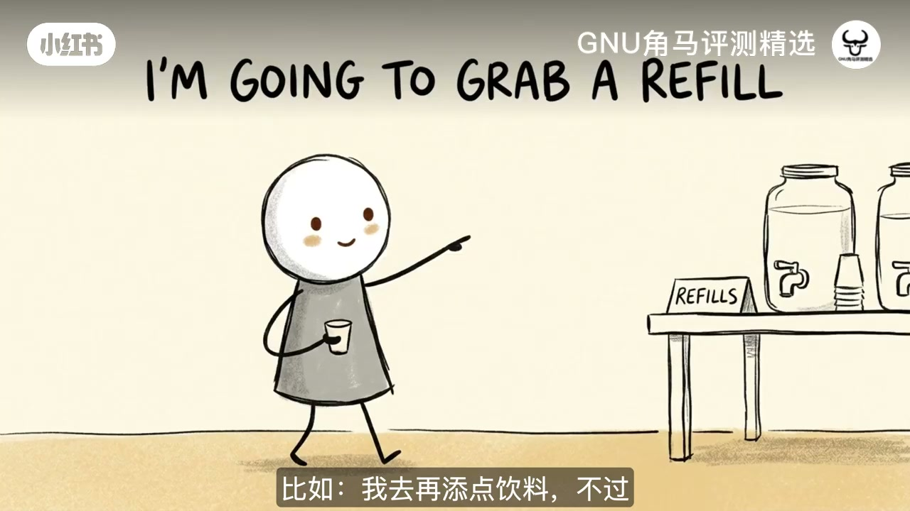
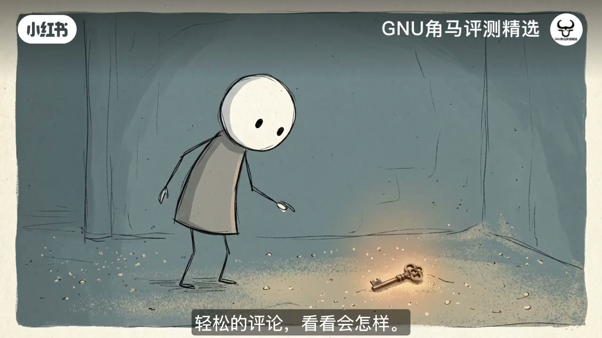

内容要点
「害怕和陌生人搭话？这五招让你轻松开口」教程要点：You're at a party you didn't want to come to. → You walk into the kitchen and there's a stranger pouring a drink two feet away. → Your heart speeds up. → Your brain runs through a few openers, shoots down every one, and lands on the safest move available.；详见正文。
知识结构
You're at a party you didn't want to com
Remember I said the first sentence
that's secretly scared
- You're at a party you didn't want to come to.
- You walk into the kitchen and there's a stranger pouring a drink two feet away.
- Your heart speeds up.
- Your brain runs through a few openers, shoots down every one, and lands on the safest move available.
- Check your phone.
You're at a party you didn't want to come to.
00:00–04:31You're at a party you di
You're at a party you didn't want to come to.；You walk into the kitchen and there's a stranger pouring a drink two feet away.；Your heart speeds up.；Your brain runs through a few openers, shoots down every one, and lands on the safest move available.；Check your phone.；Pretend something important just came in.；Nothing came in.；You know it.；They probably know it too.；Twenty minutes later, you're in the car, replaying a conversation that never happened,；and adding another line to a file in your head called,；I'm just bad at people.；But that file is built on a prediction.；And psychologists have tested that prediction, with real strangers in real places.；It's wrong.；And it's wrong in the same direction, again and again.；In this video, why your brain forecasts disaster before you say a word,；what actually happens when you talk to a stranger,；and five moves that make starting a conversation something you can actually do.；You don't need to be more charming for any of it.；We're fixing the one thing that's actually broken.；Let's start on a train.；In 2014, the behavioral scientists Nicholas Epley and Juliana Schroeder；ran a study on commuters in Chicago.；Riders on trains and buses got one of three instructions.；Sit in silence, do whatever you normally do, or talk to a stranger next to you.；Before the ride, everyone predicted how it would go.；Most people said talking would be the worst option.；More effort, less pleasant, a hassle.；Then the rides happened.；The people who talked to a stranger had the best commute of all three groups.；Their productivity didn't drop.They just enjoyed it more.；The paper is called Mistakenly Seeking Solitude,；which is a polite way of saying you're confidently picking the worst option,；and the confidence is the problem.；Now, you could say those people were told to do it.Fair.；But in 2022, Epley's lab, working with Michael Cardas,；paired up strangers and asked them to chat.Same result.；People expected awkward and got something much better than they predicted.；So the data says one thing and your gut says the opposite.；Why is a brain this good at everything else；so bad at predicting a five-minute chat?；Two reasons.The first one stings a little.；In 2018, a team led by Erica Boothby at Cornell；ran what's now called the Liking Gap Study.；Strangers talked for a few minutes.；Then each person answered two questions.；How much did you like your partner?；And how much do you think your partner liked you?；People consistently underestimated how much the other person liked them.；And it didn't fade quickly.；In a follow-up with college students living in the same dorm,；the gap lasted for months.；So you leave a conversation sure you were awkward,；and the other person leaves thinking you were nice.；You're both replaying the same five minutes,；and yours is the wrong version.；Why?；Because you can hear your own inner monologue.；Every stumble, every, why did I say that?；You can't hear theirs.；You're watching a live feed of your worst moments；and comparing it to the polished version of how they came across.；The second reason is the spotlight effect.；In a classic experiment,；Thomas Gilovich had students walk into a room；wearing a T-shirt with Barry Manilow's face on it.；Mortifying, for most of them,；they guessed about half the room would notice.；Actual number?；Around a quarter.；Nobody's keeping a transcript of your awkward pause.；They're busy worrying about their own.；So your brain predicts disaster using a broken instrument.；It overweights your flaws,；and it assumes everyone else is grading them.；Now, you've probably been told you need confidence；before you start talking to people.；That's backwards.；Confidence isn't the starting point.；It's what's left over after the evidence piles up.；You don't wait for it.；You collect it.；One ordinary conversation at a time.；Even a mediocre one counts,；because every one of them is proof against the story in your head.；But knowing the forecast is broken；still doesn't hand you a first sentence.；And that's exactly where most advice falls apart.；So here are five moves.；And I'll be upfront.；Each one has a price.；None of this is free.；Move one.；Notice something real.；Before you can say anything,；you need something to say.；And the best source is whatever you and the other person；are both already looking at.；So put the phone away.；Take one earbud out.；Look around like you'd have to describe the room to someone later.；The line that hasn't moved in ten minutes.；A playlist that sounds like a committee picked it.；A giant cake nobody wants to cut first.；The rule is simple.；Comment on the situation, not the person.；The moment you point at something shared,；you're not intruding on anyone.；You're just pointing at the room；you're both standing in.；The cost?；You have to be present.；Which means giving up the one thing；that's protected you from awkwardness your whole life.；Move two.；Comment.；Don't interrogate.


04:29–07:24Remember I said the firs
Remember I said the first sentence；is where most advice falls apart?；Here it is.；Think about the usual openers.；What do you do?；Where are you from?；Those are questions.；And a question is a demand.；You're asking a stranger to sum up their whole life；for someone they met four seconds ago.；That's not a chat.；That's an interview.；So open with a comment instead.；Light.；Easy to ignore.；This line is moving at the speed of geology.；I can't tell if that cake is a masterpiece；or a hazard.；A comment gives them a choice.；They can throw it back；or just smile and let it go.；Either way,nobody got put on the spot.；The price?；Sometimes it lands flat.；You get a polite nod and that's it.；That's usually someone who's tired,；distracted, or shy.；It says nothing about you.；Try again tomorrow.；OK.；You've now got a way to start.；But starting is the easy half.；The next two moves are where most people；quietly give up.；So stay with me.；Move three.；Follow-up.；Now questions finally get their turn.；In 2017,；a team led by Karen Huang at Harvard；studied conversations,；including real speed dates,；and found that people who asked more questions；were liked more.；And the effect was strongest for one type.；Follow-up questions.；The ones that build directly；on what the person just said.；I just moved here.；Oh.；What made you pick this city?；That's it.；Nothing clever.；It just answers the question；every person is silently asking；in every conversation.；Did you actually hear me?；Psychologists call this；perceived responsiveness.；And it's one of the strongest predictors；of feeling close to someone.；It's why a person who says；almost nothing impressive；but really listens；can leave a better impression；than someone who's dazzling；and self-absorbed.；And there's a bonus.；If you're listening for the follow-up,；you can't also be rehearsing；your next line or grading yourself.；That self-monitoring is exactly；what was making you anxious.；Listening crowds it out.；The catch?；You have to actually care；about the answer.；Which brings us to the move；most people skip.；Move four.；Go one layer down.；Small talk was never meant；to be the destination.；It's the doorway.；Here's the twist；that loops back to the train.；In the Cardas and Epley studies,；strangers also predicted；that deeper conversation；would be more awkward；than shallow chat.；In reality,；they enjoyed the deeper talk more；and felt closer afterward.；People underestimated；how much the other person；would care.；So after a couple of exchanges,；take one small step down.；Share one true specific thing.；Or ask a why question.；What got you into that?；What's the best part of it?；You're not digging.；You're letting the conversation；become real.；The risk?；It feels exposed.；Like stepping off a ledge.；Sometimes they won't match you,；and that's okay.；You still said something real,；and you were better company；than most people；they'll talk to this week.；Move five.；Exit cleanly.；This one is for the part of you


07:22–09:33that's secretly scared
that's secretly scared；that once a conversation starts,；you'll never get out.；In 2021,；Adam Mastroianni and colleagues；found that conversations；almost never end；when both people want them to,；and that people have；very little idea；when their partner wants to stop.；So the awkwardness；you feel at the end?；It's mutual.；They're wondering；the same thing.；So don't wait for the silence；to get heavy.；Leave while it's still warm.；I'm going to grab a refill,；but it was really good；talking to you.；Short, warm, specific.；It matters more than it looks.；People tend to remember；an experience by its peak；and its ending.；A good exit can make；a clumsy middle；feel pleasant in hindsight.；The trade-off?；Leaving feels abrupt at first,；like you're cutting something off.；You're not.；You're ending on a high.；So that's the whole system.；Notice.；Comment.；Follow up.；Go one layer down.；Exit warmly.；Look at what's not on that list.；Charisma.；Wit.；A perfect opener.；You don't need any of it.；You need an easy way in；and a few habits；that make the other person；feel heard.；None of this is trying harder.；It's paying attention,；and people feel the difference.；Will it feel natural；right away?；No.；The first few times,；it'll feel like speaking；a language you only half know.；Your heart will still；jump in that kitchen.；The voice in your head；will still say；you're bad at this.；But every conversation,；even a mediocre one,；is evidence against；that voice.；And evidence is；the only thing that；changes a forecast.；So here's your assignment.；This week,pick one place；where you'll be near；strangers anyway.；A coffee line.；A waiting room.；The gym.；Notice one real thing,；make one light comment,；and see what happens.；Worst case,；they smile politely；and you've lost nothing.；Now tell me；in the comments,；which of the five moves；is hardest for you?；Noticing,；commenting,；following up,；going deeper,；or leaving?；Be specific.；I read these,；and I'm curious；which one trips up；most people.；You were never bad；at talking.；You were working；from a prediction；nobody ever checked.；If this helped,；send it to the friend；who dreads parties.；They don't need；more confidence.；They just need to know；the forecast was wrong.；Subscribe and turn；on notifications,；and we'll keep；taking apart the；hidden machinery；of the mind together.




口述/画面要点（40段）
结合 Whisper medium 与画面大字整理；专有名词已校对。
You're at a party you didn't want to come to.
You walk into the kitchen and there's a stranger pouring a drink two feet away.
Your heart speeds up.
Your brain runs through a few openers, shoots down every one, and lands on the safest move available.
Check your phone.
Pretend something important just came in.
Nothing came in.
You know it.
They probably know it too.
Twenty minutes later, you're in the car, replaying a conversation that never happened,
and adding another line to a file in your head called,
I'm just bad at people.
But that file is built on a prediction.
And psychologists have tested that prediction, with real strangers in real places.
It's wrong.
And it's wrong in the same direction, again and again.
In this video, why your brain forecasts disaster before you say a word,
what actually happens when you talk to a stranger,
and five moves that make starting a conversation something you can actually do.
You don't need to be more charming for any of it.
We're fixing the one thing that's actually broken.
Let's start on a train.
In 2014, the behavioral scientists Nicholas Epley and Juliana Schroeder
ran a study on commuters in Chicago.
Riders on trains and buses got one of three instructions.
Sit in silence, do whatever you normally do, or talk to a stranger next to you.
Before the ride, everyone predicted how it would go.
Most people said talking would be the worst option.
More effort, less pleasant, a hassle.
Then the rides happened.
The people who talked to a stranger had the best commute of all three groups.
Their productivity didn't drop.They just enjoyed it more.
The paper is called Mistakenly Seeking Solitude,
which is a polite way of saying you're confidently picking the worst option,
and the confidence is the problem.
Now, you could say those people were told to do it.Fair.
But in 2022, Epley's lab, working with Michael Cardas,
paired up strangers and asked them to chat.Same result.
People expected awkward and got something much better than they predicted.
So the data says one thing and your gut says the opposite.